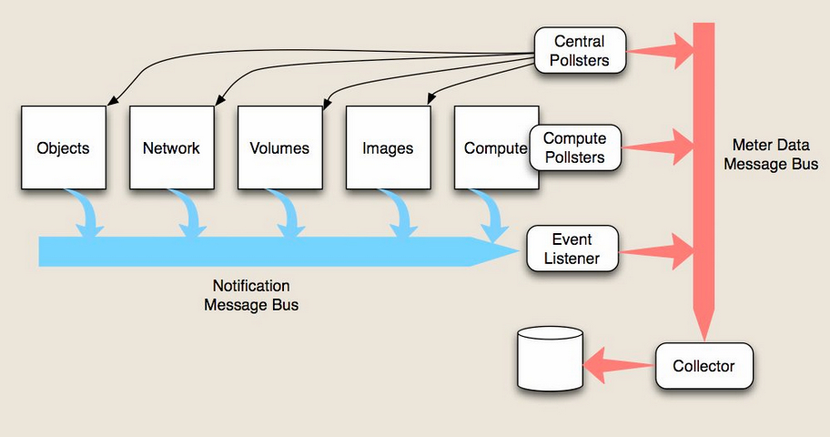

ceilometer 概述
2015-07-07
ceilmeter主要概念
- meter:资源的可计量值，如一个虚拟机，有运行时间、cpu使用率、内存使用率等； 有三种类型：
- cumulative:累计的值，eg:虚拟机运行时间
- gauge:离散或波动的值，eg:浮动ip、磁盘瞬间读写
- delta:变化的值，eg:带宽
- sample:采样数据，是每个采集点上的meter对应的值；
- statistics:某个周期内的统计数据，如平均值、峰值等；
- resource:是被监控的资源对象，虚拟机、卷等；
- alarm:报警系统。有两种类型：
- 单个阈值报警
- 多个组合条件报警
ceilometer中的服务
服务列表
项目中的setup.cfg
1 | console_scripts = |
对应的就是服务。
监控数据的收集
官网上的一张图：

对应上图来看，监控数据有两种方式收集：
- 通过调用各个模块的API去主动获取数据；
- 消费各个模块推送到notification队列（oslo-messaging）的通知，被动的采集监控数据。
ceilometer-agent-compute
- 运行在每个compute节点；
- 主要用来收集计算节点上虚拟机的监控数据；
- agent管理一组插件，分别来获取虚拟机的cpu、disk等信息，大部分通过调用Hypervisor的API，需要定期轮询来获取监控数据。
ceilometer-agent-central
- 运行在controller节点；
- 通过调用其他模块的API，来主动的收集模块的相关数据（eg:image、volume），需要定期轮询来获取监控数据。
ceilometer-agent-notification
- openstack各个组件都会推送通知（notification）信息到oslo-messaging消息框架；
- ceilometer-agent-notification实现访问消息队列，获取相关通知并做一定的转换成采样数据的格式；
- 需要一直监听oslo-messaging消息队列，可以看成是被动的监控数据；
消息发布
网络上的一张图：
对应上图来看
- 当agent监控完成之后，会进行信息的发布，有三种方式：
- RPC 会将信息发布到消息队列；
- UDP 会建立一个socket信息通道，发布信息；
- FILE 直接将信息保存到文件；
- ceilometer-collector通过对应的方式去取得信息，并保存到数据存储中；
- 数据存储系统有 mongodb/mysql/hbase/db2等；